libFitPofB
1 Introduction
libFitPofB is a collection of C++ classes using the musrfit user-function interface in order to facilitate the usage in conjunction with musrfit. The classes contained in this library generally implement calculations of one-dimensional static magnetic field distributions 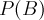 which lead to muon-spin depolarization functions
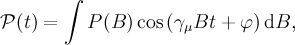
where 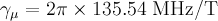 is the gyromagnetic ratio of the muon and 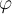 is the initial phase of the muon spins with respect to the positron detector.At the moment the only available implementations deal with field distributions measured in local isotropic superconductors, either by means of low-energy μSR in the Meissner state or by conventional μSR in the mixed state. In the following the basic usage of the library in
musrfit is explained—the calculations by themselves are only outlined. For further information please refer to the original literature and/or the source code of the implementation.
Remark 1: In order to supply certain information needed for the calculations but not suited to be stored in the
musrfit msr files an XML configuration file in the working directory is used. For details, see below.
Remark 2: The implementations in this library heavily rely on FFTW3. In principle, it always checks what is the best way to do efficient Fourier transforms for a given machine before the transforms are actually done. If repeatedly Fourier transforms of the same (sizable) length should be done, it might be worth storing the once obtained information in an external file and just load it the next time this information is needed ("wisdom handling"). In case this feature shall be used, a valid wisdom file has to be specified in the XML file.
Remark 3: The model functions described in the following do generally not behave nicely in conjunction with MINUIT function minimizations (or maximizations). The analysis process at the moment in most cases involves some tedious trial-and-error procedure, where the displayed MINUIT information as always deserves attention. This is especially true if small effects should be analyzed (e.g. small diamagnetic shifts in superconductors). The parameter uncertainty in many cases has to be estimated independently. Due to these limitations, also the use of the fit option of msr2data cannot be advised.
Remark 4: If these classes still prove useful and results obtained through them are part of scientific publications,
an acknowledgement of the use of the library is appreciated.
2 LE-μSR
2.1 One-dimensional London model for the Meissner state of isotropic superconductors
The models for analyzing LE-μSR data assume the magnetic induction 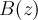 to vary only in the dimension parallel to the momentum of the incident muons. In such a case the magnetic field distribution is given by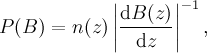
where 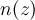 is the muon implantation profile simulated byTRIM.SP.
Assuming an array of 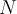 isotropic local superconductors with a total thickness 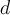 in the Meissner state the magnetic induction is given by solving the 1D London equation
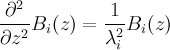
for each layer 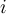 taking into account the boundary conditions(1)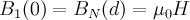
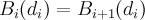
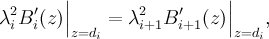
where the 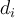 specify the interfaces between two adjacent layers and 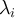 is the magnetic field penetration depth in the constituent . The calculation of the field distribution has been set up for a superconducting half-space as well as superconducting thin films with up to three superconducting layers with different penetration depths. The muon-spin depolarization functions are calculated using the following lines in the THEORY block of amusrfit msr file: - Superconducting half-space
-
userFcn libFitPofB TLondon1DHS 1 2 3 4 5
- phase (deg)
- muon implantation energy as specified in the XML startup file (keV)
- applied field (G)
- thickness of the dead layer (nm)
- magnetic field penetration depth (nm)
- Superconducting thin film (one layer)
-
userFcn libFitPofB TLondon1D1L 1 2 3 4 5 6 [a b]
- phase (deg)
- muon implantation energy as specified in the XML startup file (keV)
- applied field (G)
- thickness of the dead layer (nm)
- thickness of the actually superconducting layer (nm)
- magnetic field penetration depth (nm)
- fraction f1 of muons in the thin film contributing to the signal (0 ≤ f1 ≤ 1)
- fraction fs of muons in the substrate contributing to the signal (0 ≤ fs ≤ 1)
- Superconducting thin-film bilayer heterostructure
-
userFcn libFitPofB TLondon1D2L 1 2 3 4 5 6 7 8 [a b c]
- phase (deg)
- muon implantation energy as specified in the XML startup file (keV)
- applied field (G)
- thickness of the dead layer (nm)
- thickness of the actually superconducting first layer (nm)
- thickness of the actually superconducting second layer (nm)
- magnetic field penetration depth of the first layer (nm)
- magnetic field penetration depth of the second layer (nm)
- fraction f1 of muons in the dead and first layer contributing to the signal (0 ≤ f1 ≤ 1)
- fraction f2 of muons in the second layer contributing to the signal (0 ≤ f2 ≤ 1)
- fraction fs of muons in the substrate contributing to the signal (0 ≤ fs ≤ 1)
- Superconducting thin-film trilayer heterostructure
-
userFcn libFitPofB TLondon1D3L 1 2 3 4 5 6 7 8 9 10 [a b c d]
- phase (deg)
- muon implantation energy as specified in the XML startup file (keV)
- applied field (G)
- thickness of the dead layer (nm)
- thickness of the actually superconducting first layer (nm)
- thickness of the actually superconducting second layer (nm)
- thickness of the actually superconducting third layer (nm)
- magnetic field penetration depth of the first layer (nm)
- magnetic field penetration depth of the second layer (nm)
- magnetic field penetration depth of the third layer (nm)
- fraction f1 of muons in the dead and first layer contributing to the signal (0 ≤ f1 ≤ 1)
- fraction f2 of muons in the second layer contributing to the signal (0 ≤ f2 ≤ 1)
- fraction f3 of muons in the third layer contributing to the signal (0 ≤ f3 ≤ 1)
- fraction fs of muons in the substrate contributing to the signal (0 ≤ fs ≤ 1)
3 Conventional (bulk) μSR
3.1 Field distributions in the mixed state of isotropic superconductors
When investigating superconductors in the mixed state by means of conventional μSR a two-dimensional flux-line lattice is probed randomly by the muons. The spatial field distributions within such an ordered lattice are modeled using the Fourier series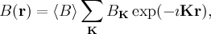
where 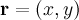, are the reciprocal lattice vectors of a two-dimensional vortex lattice and the 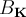 are the Fourier coefficients depending on the magnetic penetration depth 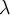 and the superconducting coherence length 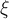. The for some specific models are as follows:
are the reciprocal lattice vectors of a two-dimensional vortex lattice and the 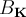 are the Fourier coefficients depending on the magnetic penetration depth 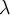 and the superconducting coherence length 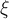. The for some specific models are as follows: - London model with Gaussian cutoffJ. Low Temp. Phys. 73, 355 (1988).">(2)
-
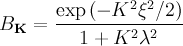
- Modified London modelPhys. Rev. B 52, 10569 (1995).">(3)
-
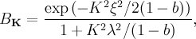
where 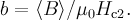 - Analytical Ginzburg-Landau modelPhys. Rev. B 55, 11107 (1997).">(4)
-
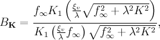
where 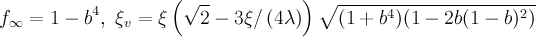 and 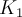 is a modified Bessel function.
The muon-spin depolarization functions finally are calculated using the following lines in the THEORY block of a
musrfit msr file: - 2D triangular vortex lattice, London model with Gaussian cutoff
-
userFcn libFitPofB TBulkTriVortexLondon 1 2 3 4
- phase (deg)
- mean magnetic induction (G)
- magnetic penetration depth (nm)
- Ginzburg-Landau coherence length (nm)
- 2D triangular vortex lattice, modified London model
-
userFcn libFitPofB TBulkTriVortexML 1 2 3 4
- phase (deg)
- mean magnetic induction (G)
- magnetic penetration depth (nm)
- Ginzburg-Landau coherence length (nm)
- 2D triangular vortex lattice, analytical Ginzburg-Landau model
-
userFcn libFitPofB TBulkTriVortexAGL 1 2 3 4
- phase (deg)
- mean magnetic induction (G)
- magnetic penetration depth (nm)
- Ginzburg-Landau coherence length (nm)
- 2D triangular vortex lattice, numerical Ginzburg-Landau model
-
userFcn libFitPofB TBulkTriVortexNGL 1 2 3 4
- phase (deg)
- mean magnetic induction (G)
- magnetic penetration depth (nm)
- Ginzburg-Landau coherence length (nm)
MIGRAD it has proven useful to use the log-likelihood maximization instead of the χ2 minimization routines and to choose sufficiently large initial steps for the parameters. Calling MINOS in conjunction with these functions is futile.Therefore, the COMMANDS block of the msr file could look like:
COMMANDS STRATEGY 0 MAX_LIKELIHOOD MIGRAD HESSE SAVENotes 2 : E.H. Brandt, J. Low Temp. Phys. 73, 355 (1988). 3 : T.M. Riseman et al., Phys. Rev. B 52, 10569 (1995). 4 : A. Yaouanc, P. Dalmas de Réotier and E.H. Brandt, Phys. Rev. B 55, 11107 (1997). 5 : E.H. Brandt, Phys. Rev. B 68, 054506 (2003).
4 The XML startup file
BMW_startup.xml is a configuration file located in the working directory. In this file some settings like the time and field resolution of the calculations as well as the present muon implantation profiles for a LE-μSR analysis have to be defined. The following XML tags are allowed to define settings: - <debug>ONE_OR_ZERO</debug>
- activate the debugging output of the settings read from the XML file by setting 1, deactivate it with 0
- <wisdom>PATH_TO_FILE</wisdom>
- specify the PATH_TO_FILE to an FFTW3 wisdom file that should be used; if the PATH_TO_FILE is invalid, no FFTW3 wisdom will be used
- <delta_t>ResT</delta_t>
- set the time resolution ResT for the calculated depolarization function in microseconds
- <delta_B>ResB</delta_B>
- set the field resolution ResB for the calculated field distribution in Gauss
- <VortexLattice></VortexLattice>
- set the parameters used for the calculation of the spatial field distribution of a vortex lattice
- <N_VortexGrid>N</N_VortexGrid>
- specify the number of points N (in each of the two dimensions) for which the fields within the vortex lattice are calculated (inside a <VortexLattice> environment)
- <LEM></LEM>
- set the parameters used for the calculation of LE-μSR field distributions
- <data_path>DATA_PATH_PREFIX</data_path>
- specify the DATA_PATH_PREFIX to the
TRIM.SPimplantation profiles (inside a <LEM> environment) - <N_theory>N_THEORY</N_theory>
- specify the number of points N_THEORY for which B(z) is calculated (inside a <LEM> environment)
The specification of this number is not needed if the calculation of the inverse of B(z) is implemented! - <energy_list></energy_list>
- set the energies for which
TRIM.SPimplantation profiles are available (inside a <LEM> environment)- <energy_label>LABEL</energy_label>
- specify the LABEL within the file name of a available
TRIM.SPRGE file (inside a <energy_list> environment)
The expected name of the RGE file will be: DATA_PATH_PREFIX + LABEL + .rge - <energy>E</energy>
- specify the muon energy E (in keV) belonging to the
TRIM.SPRGE file given above (inside a <energy_list> environment)
<?xml version="1.0" encoding="UTF-8"?>
<BMW>
<debug>0</debug>
<wisdom>/home/user/WordsOfWisdom.dat</wisdom>
<delta_t>0.01</delta_t>
<delta_B>0.5</delta_B>
<VortexLattice>
<N_VortexGrid>1024</N_VortexGrid>
</VortexLattice>
<LEM>
<data_path>/home/user/TrimSP/some-sample-</data_path>
<N_theory>5000</N_theory>
<energy_list>
<energy_label>02_0</energy_label>
<energy>2.0</energy>
<energy_label>03_0</energy_label>
<energy>3.0</energy>
<energy_label>03_6</energy_label>
<energy>3.6</energy>
<energy_label>05_0</energy_label>
<energy>5.0</energy>
<energy_label>05_3</energy_label>
<energy>5.3</energy>
</energy_list>
</LEM>
</BMW>
-- BMW & ASIdeas, requests, problems regarding PSI Wiki? Send feedback